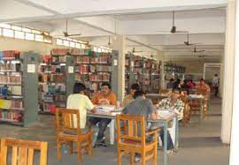
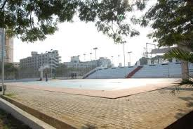
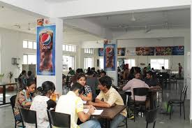

Courses We Offer
Presently the College has 6 departments which cater to the needs of all
UG and PG courses to take care of all academic and other activities
related to the students, faculty and staff of the departments and the
college as a whole
Computer Science and Engineering
This department was established in the year 1984 with an intake of
60, and the present strength of 120 is since 1997. And also started
M.Tech in Computer Science and Engineering since 2013 with an Intake
of 18. It is striving to produce world class IT professionals . The
Department has well qualified, experienced and dedicated faculty.
Electronics and Communication
The department was established in the year 1982 for imparting
state-of the- art education and training in the field of Electronics
and Communication Engineering. With an initial intake of 40 students
the department has growsn steadily and the present intake is 120. And
also started M.Tech in Digital Communication & Networking since 2013
with an Intake of 18.
Chemical Engineering
The department is having young, vibrant and dynamic faculty well
qualified and who have always been extraordinarily hard working,
dedicated to research and committed to present cutting edge
knowledge and meticulous training to students. The Department of
Chemical Engineering is actively involved in consultancy services to
the local Chemical Industries.
Our College Campus
Our College campus includes libraries, labs, classes, both boys and
girls hostel sepretly, lecture halls, residence halls, student centers
or dining halls, and park-like settings.
Our Facilities
Separate Hostels for Girls and Boys college bus for day Canteen &
Cafeteria Expert Classes by Industry Representatives Indoor and Outdoor
Games Hobby Club Wi-fi enabled campus 24 hrs Internet facilities College
Bus for Day scholars and Hostilities canteen & cafe Soft skill and
English communication Lab Industrial Tour Yoga and Meditation Centre
Blazer and Uniforms

World Class Library
The library started its Automation in the year 2003 and now it is
fully automated by using EASYLIB Software.3 books are issued to a
student for one week

Largest Play Ground
The College provides extensive facilities to students in various
sports and games, both indoor and outdoor. The College provides a
325x300 mtr. play ground.

Tasty and Healthy Food
Since inception the college has got canteen facility in college
campus which provides requirements of students, employees and others
at very reasonable cost.
What Our Student Says
Effective feedback assists the learner to reflect on their learning and
their learning strategies so they can make adjustments to make better
progress in their learning. So feel free to give your feedback
Infrastructure of the college is great. Everyday some new
development project goes on. Laboratory are well maintained and
has got all the equipment. Smartboard, projector are used as per
need. 2 academic building,1 administrative building, girls Hostel
and Boys Hoste, 4 to 5 workshop. Wifi facilities, food with proper
hygiene are maintained. Playground for cricket, football,
badminton is also there with some indoor games.
- Apoorva M S

he college provides 100% placement assistance and many renowned
organizations comes to the campus to provide internship and
placement opportunities to the students in various fields and
positions. More than 85% of the students gets placed and other
decides to go for the higher education.Placements of NIET is above
average if we compare with other private institutes.
-Ritik Chaudhary
About Us
Bheemanna Khandre Institute of Technology Bhalki in Bidar district of
Karnataka established in 1982 under the visionary leadership of Dr.
Bheemanna Khandre, Freedom fighter & Ex. Minister in Govt. of Karnataka
and with the holy blessings of Param Poojya Dr. Ma. Gha. Cha.
Chennabasva Pattadevaru. Our Institute is marching forward under the
dynamic leadership of Er. Eshwar Khandre, Chairman BOG, Working
President of KPCC, Ex. Minister of GoK and MLA of Bhalki Constituency.
The Institute is approved by AICTE New Delhi, affiliated to Visvesvaraya
Technological University, Belagavi and is accredited by IE(I)and NAAC
with B++ grade.
Follow us on Social Media